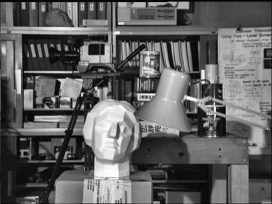

Histograms - 2: Histogram Equalization
Goal
In this section,
- We will learn the concepts of histogram equalization and use it to improve the contrast of our images.
Theory
Consider an image whose pixel values are confined to some specific range of values only. For eg, brighter image will have all pixels confined to high values. But a good image will have pixels from all regions of the image. So you need to stretch this histogram to either ends (as given in below image, from wikipedia) and that is what Histogram Equalization does (in simple words). This normally improves the contrast of the image.

I would recommend you to read the wikipedia page on Histogram Equalization for more details about it. It has a very good explanation with worked out examples, so that you would understand almost everything after reading that. Instead, here we will see its Numpy implementation. After that, we will see OpenCV function.
import cv2 import numpy as np from matplotlib import pyplot as plt img = cv2.imread('wiki.jpg',0) hist,bins = np.histogram(img.flatten(),256,[0,256]) cdf = hist.cumsum() cdf_normalized = cdf * hist.max()/ cdf.max() plt.plot(cdf_normalized, color = 'b') plt.hist(img.flatten(),256,[0,256], color = 'r') plt.xlim([0,256]) plt.legend(('cdf','histogram'), loc = 'upper left') plt.show()

You can see histogram lies in brighter region. We need the full spectrum. For that, we need a transformation function which maps the input pixels in brighter region to output pixels in full region. That is what histogram equalization does.
Now we find the minimum histogram value (excluding 0) and apply the histogram equalization equation as given in wiki page. But I have used here, the masked array concept array from Numpy. For masked array, all operations are performed on non-masked elements. You can read more about it from Numpy docs on masked arrays.
cdf_m = np.ma.masked_equal(cdf,0) cdf_m = (cdf_m - cdf_m.min())*255/(cdf_m.max()-cdf_m.min()) cdf = np.ma.filled(cdf_m,0).astype('uint8')
Now we have the look-up table that gives us the information on what is the output pixel value for every input pixel value. So we just apply the transform.
img2 = cdf[img]
Now we calculate its histogram and cdf as before ( you do it) and result looks like below :

Another important feature is that, even if the image was a darker image (instead of a brighter one we used), after equalization we will get almost the same image as we got. As a result, this is used as a “reference tool” to make all images with same lighting conditions. This is useful in many cases. For example, in face recognition, before training the face data, the images of faces are histogram equalized to make them all with same lighting conditions.
Histograms Equalization in OpenCV
OpenCV has a function to do this, cv2.equalizeHist(). Its input is just grayscale image and output is our histogram equalized image.
Below is a simple code snippet showing its usage for same image we used :
img = cv2.imread('wiki.jpg',0) equ = cv2.equalizeHist(img) res = np.hstack((img,equ)) #stacking images side-by-side cv2.imwrite('res.png',res)

So now you can take different images with different light conditions, equalize it and check the results.
Histogram equalization is good when histogram of the image is confined to a particular region. It won’t work good in places where there is large intensity variations where histogram covers a large region, ie both bright and dark pixels are present. Please check the SOF links in Additional Resources.
CLAHE (Contrast Limited Adaptive Histogram Equalization)
The first histogram equalization we just saw, considers the global contrast of the image. In many cases, it is not a good idea. For example, below image shows an input image and its result after global histogram equalization.

It is true that the background contrast has improved after histogram equalization. But compare the face of statue in both images. We lost most of the information there due to over-brightness. It is because its histogram is not confined to a particular region as we saw in previous cases (Try to plot histogram of input image, you will get more intuition).
So to solve this problem, adaptive histogram equalization is used. In this, image is divided into small blocks called “tiles” (tileSize is 8x8 by default in OpenCV). Then each of these blocks are histogram equalized as usual. So in a small area, histogram would confine to a small region (unless there is noise). If noise is there, it will be amplified. To avoid this, contrast limiting is applied. If any histogram bin is above the specified contrast limit (by default 40 in OpenCV), those pixels are clipped and distributed uniformly to other bins before applying histogram equalization. After equalization, to remove artifacts in tile borders, bilinear interpolation is applied.
Below code snippet shows how to apply CLAHE in OpenCV:
import numpy as np import cv2 img = cv2.imread('tsukuba_l.png',0) # create a CLAHE object (Arguments are optional). clahe = cv2.createCLAHE(clipLimit=2.0, tileGridSize=(8,8)) cl1 = clahe.apply(img) cv2.imwrite('clahe_2.jpg',cl1)
See the result below and compare it with results above, especially the statue region:
Additional Resources
- Wikipedia page on Histogram Equalization
- Masked Arrays in Numpy
Also check these SOF questions regarding contrast adjustment:
- How can I adjust contrast in OpenCV in C?
- How do I equalize contrast & brightness of images using opencv?
Exercises